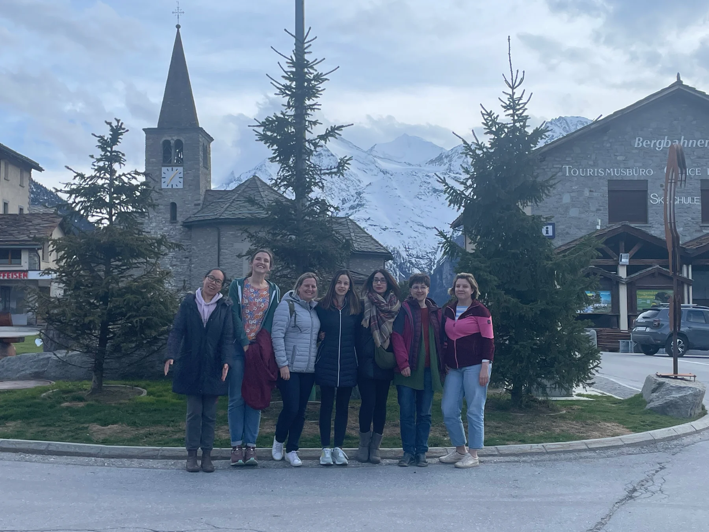

Come as you are
Your next connection
starts with hello.
Curious about the pod, looking for a community or planning a collaboration? We’d love to hear from you.
Join our community.
There is no joining fee or commitment. Tell us a little about yourself, and we’ll help you find your place in the pod.
Email us to joinStay in the loop.
Ask to join our mailing list for news and activities. You can also follow us on Instagram and LinkedIn.
Request mailing list updatesLet’s make something happen.
Have an idea for an event, a story or a collaboration? Send us a message.
500wsbern@gmail.comEmail links open your email app. You can also copy the address above.

Connections that go beyond the workplace.
A few things you might be wondering
There’s room for you.
Who is the community for?
Our community brings together women across STEM, career stages and professional paths, including academia, research institutions, industry, NGOs, science communication and policymaking. We particularly welcome researchers from abroad and underrepresented minorities.
Do I need to work at a particular university?
No. We are independent of specific universities and research institutions. Our members bring experiences from different workplaces and disciplines.
Is there a membership fee?
There is no joining fee or commitment. Get in touch and we’ll introduce you to the community.
Can I come to an event before joining?
Many of our events are open to non-members. Email us to find out about the next gathering and come meet us in person.
Can our organisation collaborate with you?
Yes. We are open to collaboration and cross-promotion with groups and projects promoting equality in STEM or academia. Email us with your idea.